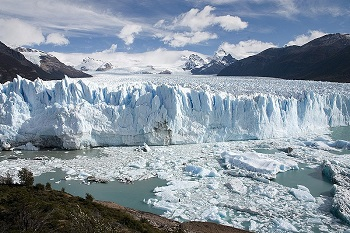
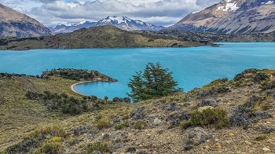
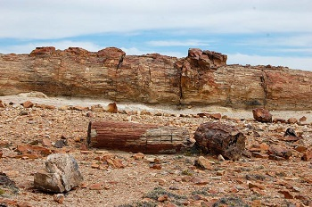
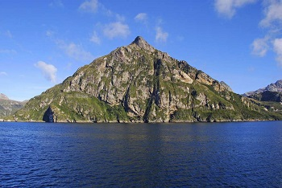

Parque Nacional Los Glaciares Los glaciares protegidos en este Parque, generados hace siglos y aún milenios, son testimonio de enormes masas de hielo que dominaron parte del planeta durante los últimos dos millones de años y presenciaron el nacimiento de la humanidad. Preservar y disfrutar de este sitio hace referencia no sólo a la biodiversidad, sino que abre una puerta a imaginar lo que fue la era del hielo en el tercer campo de hielo continental actual más grande del planeta. El Parque Nacional Los Glaciares fue creado en 1937 y declarado Sitio de Patrimonio Mundial por la UNESCO en 1981.

Parque Nacional Perito Moreno Signada por el aislamiento -a 220 kilómetros de la localidad más cercana (Gob. Gregores)- se extiende esta área protegida donde las estepas se salpican de lagunas, bosques patagónicos trepan las laderas cordilleranas hasta dar lugar a roquedales y cumbres nevadas, mientras que lagos de origen glaciario pintan tonos turquesas y esmeralda de fantasía. Paraíso del caminante, este Parque cuenta con una moderna red de senderos y refugios para pasearse entre sus espectaculares paisajes. Además del común avistamiento de fauna, la oferta al visitante se completa con la existencia de evidencias arqueológicas de presencia humana en la zona que se remontan unos 10.000 años.

Parque Nacional Patagonia Se trata de la primera área protegida nacional en proteger las mesetas de altura santacruceñas, un paisaje con numerosos conos volcánicos, cañadones, llanuras con pastizales. Conserva un importante reservorio hídrico, del cual descienden ríos, arroyos y manantiales que aseguran la provisión de agua para las localidades cercanas.Presenta notables endemismos de flora y fauna, entre los que destacan animales como el carismático macá tobiano, que vive exclusivamente de Santa Cruz, y especies vegetales como Viola auricolor y Moschopsis ameghinoi, especies del género Calceolaria y lagartijas muy poco estudiadas como la lagartija primitiva, la lagartija de Silvana y la lagartija de Ávila, entre otras. Mamíferos como el guanaco, el chinchillón anaranjado y el peludo también viven en el área protegida. Su riqueza arqueológica conforma en sí misma un conjunto de valores histórico-culturales que se unen a los valores de la cercana Cueva de las Manos.

Parque Nacional Bosques Petrificados de Jaramillo El paisaje del área protegida está dominado por la presencia del cerro Madre e Hija, que formó parte de un antiguo cono volcánico. Además de un sector de estepa, conserva una de las concentraciones más importantes de flora fósil de la Argentina continental americana. Hace 150 millones de años se desarrolló allí un gran bosque de araucarias junto con especies de pinos, helechos, cicas y benetitales semejantes a palmeras (hoy extintas). El paisaje era muy diferente al actual. La Cordillera de los Andes no existía como tal y en su lugar se extendía el mar. El clima era más cálido y húmedo. Tras el cambio de las condiciones ambientales producidas por los vulcanismos, este ambiente quedó sepultado bajo capas de ceniza y otros sedimentos. Los troncos petrificados actuales son testimonio de ese pasado lejano. Hoy, la estepa domina el panorama, con sus matas de arbustos y coirones. Entre los primeros se destaca el molle y el algarrobo patagónico, además de la mata laguna y el calafate, dotados de grandes espinas. También abundan el duraznillo, tomillo, neneo, mata guanaco o mata amarilla, lengua de fuego, colapiche y la mata negra. Como representantes de la fauna actual, pueden encontrarse entre las aves choiques, loicas y el tucúquere, un enorme búho, mientras que es de destacar la presencia del keú patagónico. Una especie de mamífero de interés y valor especial es la comadrejita patagónica, pequeño marsupial cuya biología se conoce muy poco. También viven aquí guanacos, piches y zorros grises.

Parque Nacional Monte León Monte León deslumbra a los visitantes con la inmensidad de la Patagonia Austral, en su carácter más inhóspito y salvaje, con un paisaje único entre las áreas protegidas nacionales: aquí el Mar Argentino y la estepa se funden en un abrazo que cobija una gran biodiversidad junto a la geoforma que rememora a un león echado y da nombre a este Parque. Sobre el final de la Ruta Provincial 63, que se abre camino a través de un caprichoso y magnífico relieve, esta esfinge natural sirvió como punto de referencia a embarcaciones en su paso por estas aguas a lo largo de la historia.

Parque Interjurisdiccional Marino Mankeke El PIM Makenke, que significa “los nuevos” en lengua tehuelche, protege ciclos ecológicos y especies que habitan y se desarrollan en esta franja costera del Mar Argentino, así como en sus aguas y el lecho marino: delfines, toninas, orcas, pingüinos de Magallanes, elefantes marinos del sur y una enorme cantidad de aves, donde el cormorán es el rey. Pero, además, esta zona fue el primer punto de encuentro entre españoles y otros expedicionarios a partir del siglo XVI, como Hernando de Magallanes en 1520, Sir Francis Drake y más tarde, a principios del siglo XIX, Charles Darwin, quienes luego se aventuraron aún más al sur.

Parque Interjurisdiccional Marino Isla Pingüino Ubicado cerca de la localidad santacruceña de Puerto Deseado, este sector del Mar Argentino constituye un espacio cargado de historia y fauna. En sus más de 159.000 hectáreas, el Parque incluye varias islas e islotes entre las que se destaca la isla Pingüino, que da nombre al área protegida. Entre los restos de una vieja factoría que procesaba grasa de lobos marinos y un antiguo faro de la Marina Argentina se pueden encontrar un sinnúmero de aves costero-marinas como petreles, albatros, gaviotines sudamericanos, diversos cormoranes, pingüinos de Magallanes, ostreros, skúas y mamíferos como elefantes marinos del sur y focas. Sin embargo, el gran tesoro de esta isla es el simpático pingüino de penacho amarillo, caracterizado por las plumas amarillas a los lados de su cabeza y los ojos rojos. La colonia ubicada en el Parque es la única que puede ser visitada por turistas en todo el continente.

Parque Nacional Tierra del Fuego El área protegida más austral de Argentina resguarda bosques andino-patagónicos testigos del encuentro del tramo final de la Cordillera de los Andes con el mar en el Canal de Beagle, que conecta los océanos Atlántico y Pacífico Sur. La tierra de los fuegos, cuyo nombre fue dado por los exploradores al ver las fogatas encendidas por los habitantes originarios de la isla, los yaganes, es más que su excepcional belleza: es puerta de entrada para las excursiones a la Antártida y una aventura en sí misma que no deja a nadie indiferente.

Reserva Natural Silvestre Isla de los Estados Protege el archipiélago conformado por la isla que da nombre al área protegida y varias islas e islotes más pequeños, conjunto que pueden considerarse el extremo de la cordillera fueguina. Exhibe un paisaje único, con profundos fiordos de bordes abruptos y pequeñas playas de piedra que preceden a las turberas y a los densos bosques que cubren gran parte de la isla principal. Especies como el guindo y el canelo contrastan con los pastizales costeros de pasto tussok, representativo del ecosistema de pastizal de Islas del Atlántico Sur. Entre la fauna se destacan lobos marinos de uno y dos pelos, el ratón de los guindales y un elenco de aves como el carancho austral, el cormorán real, cauquenes y dos especies de pato vapor. Constituye la principal área de reproducción mundial del pingüino de penacho amarillo. En el mar cercano es posible ver toninas overas, orcas, cachalotes y algunas especies de ballena. La isla, con una rica historia, fue un sitio visitado por los grupos canoeros originarios de la región. Fue el comandante Luis Piedrabuena quien sentó la soberanía nacional en el archipiélago.